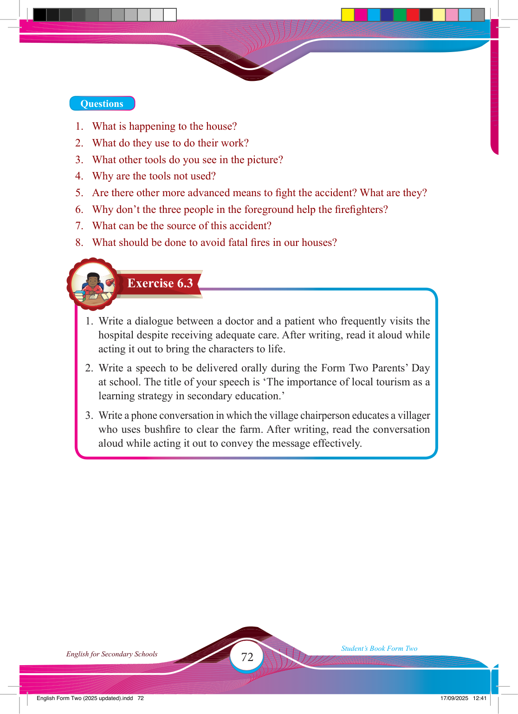

Exercise 6.3
Questions
1. What is happening to the house?
2. What do they use to do their work?
3. What other tools do you see in the picture?
4. Why are the tools not used?
5. Are there other more advanced means to fi ght the accident? What are they?
6. Why don’t the three people in the foreground help the fi refi ghters?
7. What can be the source of this accident?
8. What should be done to avoid fatal fi res in our houses?
1. Write a dialogue between a doctor and a patient who frequently visits the hospital despite receiving adequate care. After writing, read it aloud while acting it out to bring the characters to life.
2. Write a speech to be delivered orally during the Form Two Parents’ Day at school. The title of your speech is ‘The importance of local tourism as a learning strategy in secondary education.’
3. Write a phone conversation in which the village chairperson educates a villager
who uses bushfi re to clear the farm. After writing, read the conversation
aloud while acting it out to convey the message effectively.
17/09/2025 12:41